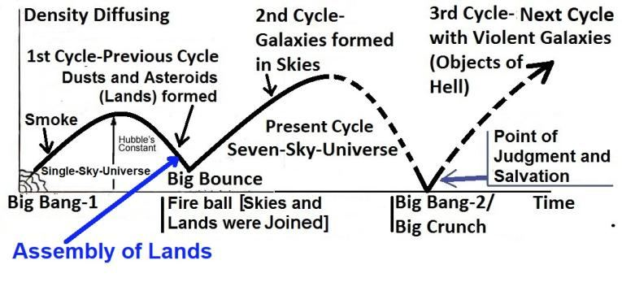
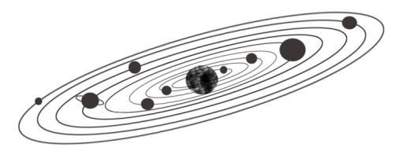
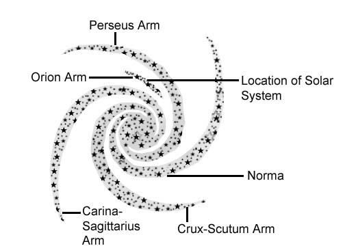
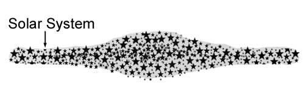

FIGURE 2.6: Assembly of Lands

চিত্র 2_6 / Figure 2_6
চিত্র 2.6: জমির সমাবেশ
চিত্র 2_6 / Figure 2_6
The cycles of the universe are briefly discussed in the previous chapter. The universe produced elements up to carbon in the primordial fireball of the first cycle (smoke).
পূর্ববর্তী অধ্যায়ে মহাবিশ্বের চক্র সংক্ষিপ্তভাবে আলোচনা করা হয়েছে। মহাবিশ্ব প্রথম চক্রের (ধোঁয়া) আদিম ফায়ারবলে কার্বন পর্যন্ত উপাদান তৈরি করেছে।
―Moreover, extended and infused His force / gravitational force (thumma istawa) into the Sky (ila I-samai), while it had been smoke…‖ [Al Quran 41:11]
"তাছাড়া, আকাশে (ইলা ই-সামাই) তাঁর বল/মাধ্যাকর্ষণ শক্তি (থুম্মা ইস্তাওয়া) প্রসারিত ও সংক্রমিত করেছেন, যখন এটি ধোঁয়ায় ছিল..." [আল কুরআন 41:11]
Later, in the same first cycle, the universe produced elements at least up to silicon, or even up to iron, in the hot big stars. The stars exploded and scattered the elements into the space. Thus, when the universe of the first cycle contracted, there was "assembly of lands" (ma fi ardi jamian) produced from the heavier elements, as the verse under discussion says: ―He the One Who created for you what was in the assembly of lands (ma fi ardi jamian)…‖ Earlier, Allah infused gravitational force into the universe of the first cycle: ―…Moreover, infused His force / gravitational force (thumma istawa) into the Sky (ila i-samai)…‖ The universe contracted faster and faster under the overwhelming force of gravity, gradually diminishing in size until it compressed into a fireball (a hot, dense assembly of lands). As a result of the intense pressure and temperature of contraction, the universe bounced out from this fiery state, initiating a restart of expansion. This event marked the beginning of the present seven-sky universe, the second cycle of its existence.
পরবর্তীতে, একই প্রথম চক্রে, মহাবিশ্ব অন্তত সিলিকন পর্যন্ত, এমনকি লোহা পর্যন্ত, উত্তপ্ত বড় নক্ষত্রগুলিতে উপাদান তৈরি করেছিল। তারাগুলি বিস্ফোরিত হয়ে মহাকাশে উপাদানগুলিকে ছড়িয়ে দেয়। এইভাবে, যখন প্রথম চক্রের মহাবিশ্ব সংকুচিত হয়েছিল, তখন ভারী উপাদানগুলি থেকে "ভূমির সমাবেশ" (মা ফি আরদি জামিয়ান) উৎপন্ন হয়েছিল, যেমন আলোচ্য আয়াতে বলা হয়েছে: "তিনিই যিনি তোমাদের জন্য সৃষ্টি করেছেন যা জমির সমাবেশে ছিল (মা ফি আরদি জামিয়ান)..." এর আগে, আল্লাহ প্রথম মহাবিশ্বের মহাবিশ্বের চক্রকে শক্তিশালী করেছিলেন। “…তাছাড়া, আকাশে তার বল/মাধ্যাকর্ষণ শক্তি (থুম্মা ইস্তাওয়া) প্রবেশ করানো (ইলা ই-সামাই)…” মহাবিশ্ব মহাকর্ষের অপ্রতিরোধ্য শক্তির অধীনে দ্রুত এবং দ্রুত সংকুচিত হতে থাকে, ধীরে ধীরে আকারে হ্রাস পেতে থাকে যতক্ষণ না এটি একটি আগুনের গোলা (একটি উত্তপ্ত, সমবেত ভূমি) তে সংকুচিত হয়। সংকোচনের তীব্র চাপ এবং তাপমাত্রার ফলে, মহাবিশ্ব এই জ্বলন্ত অবস্থা থেকে বেরিয়ে আসে, সম্প্রসারণের পুনরায় শুরু করে। এই ঘটনাটি বর্তমান সাত-আকাশের মহাবিশ্বের সূচনা করেছে, এটির অস্তিত্বের দ্বিতীয় চক্র।
FIGURE 2.6: Big Bounce So, the verse under discussion says:
চিত্র 2_6 / Figure 2_6
চিত্র 2.6: বিগ বাউন্স তাই, আলোচনার অধীন আয়াতটি বলে:
চিত্র 2_6 / Figure 2_6
―He the One Who created for you what was in the assembly of lands (ma fi ardi jamian), Moreover, infused His force / gravitational force (thumma istawa) into the Sky (ila i-samai) and fashioned them into Seven Skies, and He of everything is All-Knowing.‖ [Al Quran 2:29]
"তিনিই তোমাদের জন্য সৃষ্টি করেছেন যা জমিনের সমাবেশে ছিল (মাফি আরদি জামিয়ান), তাছাড়া, তাঁর বল/মাধ্যাকর্ষণ শক্তি (থুম্মা ইস্তাওয়া) আকাশে (ইলা ই-সামাই) প্রবেশ করান এবং সেগুলোকে সাত আসমানে পরিণত করেছেন, এবং তিনি সর্ব বিষয়ে সর্বজ্ঞাতা।'' [আল কুরআন ২]
The Skies are waves of space, one inside another- like the peels of onion. There are seven skies in the universe. Matter could rapidly coalesce into galaxies due to the waved space. The expansive skies also ensured a balanced distribution of matter throughout the universe. This is the Quran‘s model of the universe. It has received substantial support from the Webb Space Telescope. The telescope has discovered several galaxies that formed within 500 million years after the Big Bang. The swift formation of the large galaxies hints at the existence of waved space (skies). For instance, the galaxy Gz9p3, with a redshift z=9.3, formed within 510 million years after the initiation of the present universe (2nd Cycle). Remarkably, this galaxy is ten times larger than the Milky Way and hosts bright stars containing elements like carbon, oxygen, and silicon. The presence of heavier elements observed in the early universe of the present cycle implies that they were produced in the preceding cycle (first cycle). This suggests that the present universe may have originated with a Big Bounce, rather than from a Big Bang. ―Do not the unbelievers see that the Skies and the Lands were joined together (as assembly of lands / Fireball) before We clove them asunder (Big Bounce)‖ [Al Quran 21:30]
আকাশগুলি হল মহাকাশের তরঙ্গ, একটির ভিতরে আরেকটি- পেঁয়াজের খোসার মতো। মহাবিশ্বে সাতটি আকাশ রয়েছে। তরঙ্গিত স্থানের কারণে পদার্থ দ্রুত গ্যালাক্সিতে একত্রিত হতে পারে। বিস্তৃত আকাশ সমগ্র মহাবিশ্ব জুড়ে পদার্থের সুষম বন্টন নিশ্চিত করেছে। এটি মহাবিশ্বের কুরআনের মডেল। এটি ওয়েব স্পেস টেলিস্কোপ থেকে যথেষ্ট সমর্থন পেয়েছে। টেলিস্কোপটি বিগ ব্যাং-এর পরে 500 মিলিয়ন বছরের মধ্যে গঠিত বেশ কয়েকটি ছায়াপথ আবিষ্কার করেছে। বৃহৎ ছায়াপথগুলির দ্রুত গঠন তরঙ্গায়িত স্থানের (আকাশ) অস্তিত্বের ইঙ্গিত দেয়। উদাহরণস্বরূপ, গ্যালাক্সি Gz9p3, একটি রেডশিফ্ট z=9.3 সহ, বর্তমান মহাবিশ্বের সূচনার (২য় চক্র) 510 মিলিয়ন বছরের মধ্যে গঠিত হয়েছিল। লক্ষণীয়ভাবে, এই ছায়াপথটি মিল্কিওয়ের চেয়ে দশগুণ বড় এবং কার্বন, অক্সিজেন এবং সিলিকনের মতো উপাদান ধারণকারী উজ্জ্বল নক্ষত্রগুলিকে হোস্ট করে। বর্তমান চক্রের প্রারম্ভিক মহাবিশ্বে পরিলক্ষিত ভারী উপাদানগুলির উপস্থিতি বোঝায় যে তারা পূর্ববর্তী চক্রে (প্রথম চক্র) উত্পাদিত হয়েছিল। এটি পরামর্শ দেয় যে বর্তমান মহাবিশ্ব একটি বিগ ব্যাং থেকে নয় বরং একটি বিগ বাউন্স দিয়ে উদ্ভূত হতে পারে। "অবিশ্বাসীরা কি দেখে না যে আকাশ ও ভূমি একত্রে মিলিত হয়েছিল (জমি / আগুনের গোলা হিসাবে) আগে আমরা তাদের বিচ্ছিন্ন করার (বিগ বাউন্স)" [আল কুরআন 21:30]
Large Scale Structure of the Universe / Skies
মহাবিশ্ব/আকাশের বড় আকারের কাঠামো
The aim of this topic is to describe the Large Scale Structure of the present universe (2nd Cycle). The ―Large Scale Structure of the Universe‖ is not yet discovered, but the verse under discussion says that the universe is structured as Seven Skies: ―…Moreover, infused His force / gravitational force (thumma istawa) into the Sky (ila i-samai) and fashioned them into Seven Skies…‖ Here, I will discuss the Quran‘s view about the Skies (Samawaat). The subject is dealt in three Parts, as under: Part 1: General Appearance of the Universe Part 2: Large Scale Structure of the Universe- Science Part 3: Large Scale Structure of the Universe- the Quran
এই বিষয়ের উদ্দেশ্য হল বর্তমান মহাবিশ্বের (2য় চক্র) বৃহৎ স্কেল কাঠামো বর্ণনা করা। "মহাবিশ্বের বৃহৎ আকারের কাঠামো" এখনও আবিষ্কৃত হয়নি, তবে আলোচনার অধীন আয়াতটি বলছে যে মহাবিশ্ব সাত আকাশের মতো গঠন করা হয়েছে: "… তাছাড়া, তাঁর বল/মধ্যাকর্ষণ শক্তি (থুম্মা ইস্তওয়া) আকাশে (ইলা ই-সামাই) প্রবেশ করানো হয়েছে এবং এখানে আমি সেগুলিকে সাজিয়ে আলোচনা করব... আকাশ সম্পর্কে (সামাওয়াত)। বিষয়টি তিনটি অংশে আলোচনা করা হয়েছে, যেমন: পার্ট 1: মহাবিশ্বের সাধারণ চেহারা পার্ট 2: মহাবিশ্বের বৃহৎ আকারের কাঠামো- বিজ্ঞান পর্ব 3: মহাবিশ্বের বড় আকারের কাঠামো- কুরআন
Part 1: General Appearance of the Universe
পার্ট 1: মহাবিশ্বের সাধারণ চেহারা
One must know the ―General Appearance of Universe‖ to understand the Skies. The subject is discussed under the following headings: 1a. The Solar System 1b. Milky Way Galaxy 1c. Orientation 1d. The changing appearance of the Night Sky 1e. Other Galaxies 1f. Orientation 1g. Group, Cluster, Super-Cluster 1h. Summary of Part 1 Readers who already know these basics may skip this Part. The Part is inspired by ―General Appearance of the Universe‖ written by Bertrand Russell in his book ABC of Relativity.
আকাশ বোঝার জন্য একজনকে অবশ্যই "মহাবিশ্বের সাধারণ চেহারা" জানতে হবে। বিষয়টি নিম্নলিখিত শিরোনামের অধীনে আলোচনা করা হয়েছে: 1a. সৌরজগত 1 খ. মিল্কিওয়ে গ্যালাক্সি 1c. ওরিয়েন্টেশন 1d. রাতের আকাশ 1e এর পরিবর্তনশীল চেহারা। অন্যান্য গ্যালাক্সি 1f. ওরিয়েন্টেশন 1g। গ্রুপ, ক্লাস্টার, সুপার-ক্লাস্টার 1h. পার্ট 1 এর সারাংশ পাঠকরা যারা ইতিমধ্যে এই মৌলিক বিষয়গুলি জানেন তারা এই অংশটি এড়িয়ে যেতে পারেন৷ অংশটি বার্ট্রান্ড রাসেল তার আপেক্ষিকতার বই এবিসি-তে লিখিত "মহাবিশ্বের সাধারণ চেহারা" দ্বারা অনুপ্রাণিত।
1a. The Solar System
1 ক. সৌরজগত
Our Earth is one of the planets of the Solar System. The shape of the Earth is like an orange. The Earth spins on its axis once in a day and revolves around the Sun once in a year. The Solar System includes eight planets and their moons, three dwarf planets (Ceres, Pluto, and Eris) and their moons, billions of small bodies (asteroids) and interplanetary dust and gas. The system is bound by gravity.
আমাদের পৃথিবী সৌরজগতের একটি গ্রহ। পৃথিবীর আকৃতি কমলার মতো। পৃথিবী দিনে একবার তার অক্ষে ঘোরে এবং বছরে একবার সূর্যের চারদিকে ঘোরে। সৌরজগতে আটটি গ্রহ এবং তাদের চাঁদ, তিনটি বামন গ্রহ (সেরেস, প্লুটো এবং এরিস) এবং তাদের চাঁদ, কোটি কোটি ছোট দেহ (গ্রহাণু) এবং আন্তঃগ্রহীয় ধূলিকণা এবং গ্যাস রয়েছে। সিস্টেমটি মাধ্যাকর্ষণ দ্বারা আবদ্ধ।
FIGURE 2.7: The Solar System

চিত্র 2_7 / Figure 2_7
চিত্র 2.7: সৌরজগত
চিত্র 2_7 / Figure 2_7
1b. Milky Way Galaxy
1 খ. মিল্কিওয়ে গ্যালাক্সি
The stars are not haphazardly scattered throughout the Universe. They are grouped into systems called galaxies. The galaxy in which our Solar System is located is called ―Milky Way Galaxy‖. There are about two hundred billion stars in the galaxy. Our Sun is a medium size yellow star among those. Other than the stars, there are huge quantities of free dust and gas scattered in the interstellar space of the galaxy. These free dust and gas would be enough to produce another twenty billion stars.
তারাগুলো এলোমেলোভাবে মহাবিশ্ব জুড়ে ছড়িয়ে ছিটিয়ে নেই। তারা গ্যালাক্সি নামক সিস্টেমে বিভক্ত। আমাদের সৌরজগৎ যে গ্যালাক্সিতে অবস্থিত তার নাম ‘মিল্কি ওয়ে গ্যালাক্সি’। গ্যালাক্সিতে প্রায় দুইশ বিলিয়ন তারা রয়েছে। আমাদের সূর্য তাদের মধ্যে একটি মাঝারি আকারের হলুদ তারা। তারা ব্যতীত, গ্যালাক্সির আন্তঃনাক্ষত্রিক স্থানে ছড়িয়ে ছিটিয়ে প্রচুর পরিমাণে মুক্ত ধূলিকণা এবং গ্যাস রয়েছে। এই মুক্ত ধূলিকণা এবং গ্যাস আরও বিশ বিলিয়ন তারা তৈরি করতে যথেষ্ট হবে।
FIGURE 2.8: Milky Way Galaxy (Likely Overhead View)

চিত্র 2_8 / Figure 2_8
চিত্র 2.8: মিল্কিওয়ে গ্যালাক্সি (সম্ভবত ওভারহেড ভিউ)
চিত্র 2_8 / Figure 2_8
The stars, free dust, and gas form a central hub (nucleus) and several spiral arms. The whole galaxy is rotating slowly in the space like a giant Catherine wheel. The average distance between the stars is four light years (one light year is ten million-million kilometers, approximately). The galaxy measures one hundred thousand light years from edge to edge. The central hub of the galaxy is twenty thousand light years in diameter. Our Solar System is located in the Orion Arm (it is called Orion Spur as well). It is a small arm between Perseus and Carina-Sagittarius Arms. The distance of Solar System is about twenty-six thousand light years from the galactic center.
তারা, মুক্ত ধূলিকণা এবং গ্যাস একটি কেন্দ্রীয় কেন্দ্র (নিউক্লিয়াস) এবং বেশ কয়েকটি সর্পিল বাহু তৈরি করে। পুরো গ্যালাক্সিটি মহাকাশে বিশাল ক্যাথরিন চাকার মতো ধীরে ধীরে ঘুরছে। তারার মধ্যে গড় দূরত্ব চার আলোকবর্ষ (এক আলোকবর্ষ হল দশ মিলিয়ন-মিলিয়ন কিলোমিটার, প্রায়)। ছায়াপথটি প্রান্ত থেকে প্রান্ত পর্যন্ত এক লক্ষ আলোকবর্ষ পরিমাপ করে। গ্যালাক্সির কেন্দ্রীয় কেন্দ্রের ব্যাস বিশ হাজার আলোকবর্ষ। আমাদের সৌরজগৎ ওরিয়ন আর্মে অবস্থিত (এটিকে ওরিয়ন স্পুরও বলা হয়)। এটি পার্সিয়াস এবং ক্যারিনা-ধনু অস্ত্রের মধ্যে একটি ছোট বাহু। গ্যালাকটিক কেন্দ্র থেকে সৌরজগতের দূরত্ব প্রায় ছাব্বিশ হাজার আলোকবর্ষ।
FIGURE 2.9: Milky Way Galaxy (Likely Side View)

চিত্র 2_9 / Figure 2_9
চিত্র 2.9: মিল্কিওয়ে গ্যালাক্সি (সম্ভবত সাইড ভিউ)
চিত্র 2_9 / Figure 2_9
The width of the galaxy is ten thousand light years at the center, and two thousand light years at the edge. Scientists predict that each galaxy, including our Milky Way, holds a super-massive black hole in its central hub. As the whole galaxy is rotating, the Solar System is speeding at a rate of 220 km per second. Despite the enormous speed, the galaxy is so huge that one complete orbit takes two hundred million years approximately.
গ্যালাক্সির প্রস্থ কেন্দ্রে দশ হাজার আলোকবর্ষ এবং প্রান্তে দুই হাজার আলোকবর্ষ। বিজ্ঞানীরা ভবিষ্যদ্বাণী করেছেন যে আমাদের মিল্কিওয়ে সহ প্রতিটি গ্যালাক্সি তার কেন্দ্রীয় কেন্দ্রে একটি সুপার-ম্যাসিভ ব্ল্যাক হোল ধারণ করে। যেহেতু পুরো গ্যালাক্সি ঘুরছে, সৌরজগৎ প্রতি সেকেন্ডে 220 কিলোমিটার বেগে চলছে। বিশাল গতি সত্ত্বেও, গ্যালাক্সিটি এত বিশাল যে একটি সম্পূর্ণ কক্ষপথে প্রায় দুইশ মিলিয়ন বছর সময় লাগে।
1c. Orientation
1 গ. ওরিয়েন্টেশন
We see many stars in some of the nights. It seems innumerable. But maximum three thousand stars become visible to the naked eye in a clear dark night. From two hemispheres of the Earth, maximum six thousand stars can be seen without a telescope. We see a very small part of the galaxy. And, as we are located inside the galaxy, we see the visible stars scattered all-around the space. Mainly, this is our ‗naked- eye-universe‘. We see a long glowing band of light too in the night sky. It is a part of the Perseus Arm. It glows due to the lights of innumerable stars extending in that direction. The Arm is seven thousand light years away from the Earth. [One can observe a part of Carina-Sagittarius arm from the southern hemisphere of the Earth. The arm is seven thousand light years away in the direction of the galactic center. But, it is not visible to the naked eye]
কোন কোন রাতে আমরা অনেক তারা দেখতে পাই। মনে হয় অসংখ্য। তবে পরিষ্কার অন্ধকার রাতে খালি চোখে সর্বাধিক তিন হাজার তারা দৃশ্যমান হয়। পৃথিবীর দুই গোলার্ধ থেকে টেলিস্কোপ ছাড়াই সর্বোচ্চ ছয় হাজার নক্ষত্র দেখা যায়। আমরা গ্যালাক্সির খুব ছোট অংশ দেখতে পাই। এবং, আমরা গ্যালাক্সির অভ্যন্তরে অবস্থিত বলে আমরা দৃশ্যমান তারাগুলিকে মহাকাশের চারপাশে ছড়িয়ে ছিটিয়ে দেখতে পাই। প্রধানত, এটি আমাদের 'নগ্ন-চোখের মহাবিশ্ব'। আমরা রাতের আকাশে আলোর একটি দীর্ঘ উজ্জ্বল ব্যান্ড দেখতে পাই। এটি পার্সিয়াস আর্ম এর একটি অংশ। সেই দিকে প্রসারিত অসংখ্য তারার আলোর কারণে এটি জ্বলজ্বল করে। আর্মটি পৃথিবী থেকে সাত হাজার আলোকবর্ষ দূরে। [পৃথিবীর দক্ষিণ গোলার্ধ থেকে কেউ ক্যারিনা-ধনুর হাতের একটি অংশ পর্যবেক্ষণ করতে পারে। বাহুটি গ্যালাকটিক কেন্দ্রের দিকে সাত হাজার আলোকবর্ষ দূরে। কিন্তু, খালি চোখে দেখা যায় না]
1d. The changing appearance of the Night Sky
1 ডি. রাতের আকাশের বদলে যাওয়া চেহারা
Due to the daily rotation of the Earth, the stars seem to sweep across the sky each night. And, due to the yearly rotation of the Earth around the Sun, a part of the night sky enters the day sky, and a part of the day sky enters the night sky every day. So, the appearance of the sky changes from night to night (4 minutes per night). If one will not consider these apparent movements, one will find the stars static. But, actually they are not static; if one could go out of the Milky Way Galaxy quite a big distance, one could see the entire galaxy slowly rotating in the space.
পৃথিবীর প্রতিদিনের আবর্তনের কারণে, তারাগুলি প্রতি রাতে আকাশ জুড়ে ঝাড়ু দেয় বলে মনে হয়। এবং, সূর্যের চারপাশে পৃথিবীর বার্ষিক আবর্তনের কারণে, রাতের আকাশের একটি অংশ দিনের আকাশে প্রবেশ করে এবং দিনের আকাশের একটি অংশ প্রতিদিন রাতের আকাশে প্রবেশ করে। সুতরাং, রাত থেকে রাত পর্যন্ত আকাশের চেহারা পরিবর্তিত হয় (প্রতি রাতে 4 মিনিট)। যদি কেউ এই আপাত গতিবিধি বিবেচনা না করে তবে তারাগুলিকে স্থির দেখতে পাবে। কিন্তু, আসলে তারা স্থির নয়; যদি কেউ মিল্কিওয়ে গ্যালাক্সি থেকে বেশ বড় দূরত্বে যেতে পারে, তবে পুরো গ্যালাক্সিটি ধীরে ধীরে মহাকাশে ঘুরতে দেখা যায়।
1e. Other Galaxies
1ই. অন্যান্য ছায়াপথ